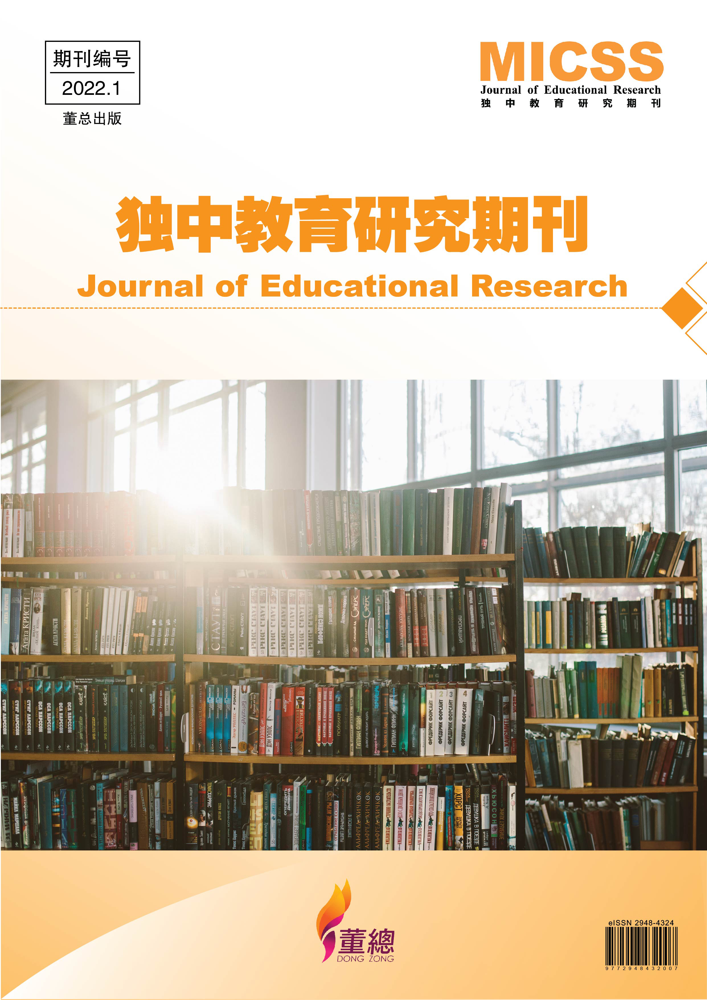

独中教育研究期刊创刊
本着提高独中教育学术研究形象、提供独中教育学术交流平台、扩大独中教育学术研究影响力，以及汇集独中教育研究学术成果，独中教育研究期刊（电子版）创刊号（https://micss.dongzong.my）终于在2022年5月30日发布。本创刊号共收集了6篇研究报告，涵盖教材研究、教学法、教师专业成长、校订课程，以及教学评量。这些文章的作者大部分是前线教师，以及学科人员。所有研究报告皆为实证性研究，在摘要部分也是以三语呈现。以下简略这6篇研究报告的摘要。
| 作者 | 研究报告 |
|---|---|
| 郭子义 | 〈翻转教室对初三学生科学学习动机与学习成就影响之行动研究〉 探讨了实施翻转教室教学法对科学科之学习动机和学习成就的影响，并从实施过程中探讨翻转教室的实施困难与限制。 |
| 黄树群 | 〈不同学习风格以任务导向策略学习程式设计的学习成效〉 探讨不同学习风格在以任务导向策略学习程式设计课程“条件判断”与“重复回圈”两个单元后的学习成效。 |
| 朱键鸿 | 〈探讨学生对社会科学小组口试的理解与经验——以甲独中社会科为例〉 以小组合作口试来作为期末的总结性评量，以期培养学生21世纪世界公民的核心能力与素养。研究结果发现学生对口试的执行具有高度的认同，口试本身也可以是良好的学习，以及学生面对组织论述、发言时限和引导讨论的挑战。 |
| 苏燕卿 | 〈文本教学的成效与独中教改目标的落实探讨〉 通过梳理现行六册高中华文课本的内容架构、选文规律和文本类型，并发出调查问卷，收集各独中华文教师对现行高中华文课本选文的评价和课堂教学状况。 |
| 林玉莲 | 〈高二生物内分泌单元问题引导自学之有效性探讨〉 主要探讨独中高二生物内分泌单元提问引导自学单是否产生有效学习，以及对不同班级学生的差异。 |
| 容健辉 | 〈教师专业学习共同体的成立与实施——以尊孔独中为例〉 根据访谈资料分析，“教师专业学习共同体”（Professional Learning Communities，简称PLC）实行的成效包括：提供平台让教师彼此互助成长、促进教师教学专业化，以及激发教师自我效能感。 |
创刊号的6篇研究报告从不同角度探视独中教育不同面向的问题，并通过科学系统的论述理清和论证各项教育措施的有效性。期待在接下来的日子，会有更多关心独中教育的专家学者、前线教师的来稿，共同为独中教育的发展思索更好的方案和策略。
独中教育研究期刊征稿：https://micss.dongzong.my/call-for-papers/call-for-papers
